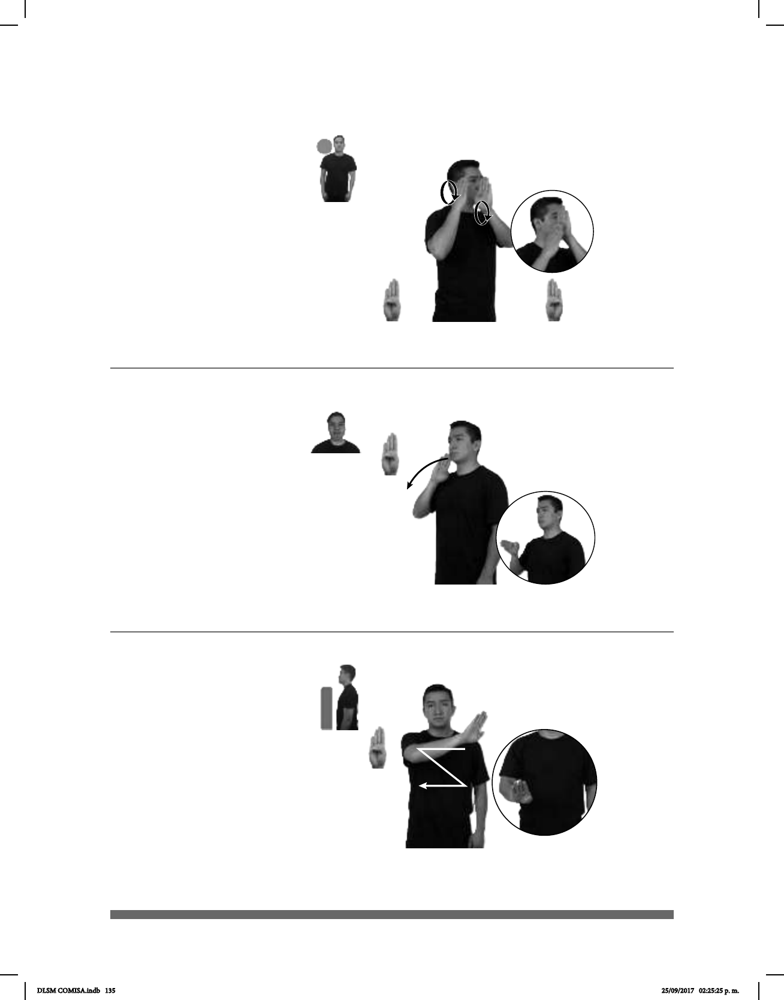

135
Seña: SB
MD y MB B-P.1
MD palma hacia la
izquierda. MB palma hacia la
derecha.
MD y MB a la altura
del rostro del lado derecho.
Las manos se
mueven formando círculos
alternadamente.
País ubicado en el
noreste de Europa cuya capital es
Bruselas.
(B-P 73)
#VGT, #LSFB pro-DOS-DE-ELLOS pos-SU LENGUA-DE-SEÑAS pos-SU PAÍS
BÉLGICA
En Bélgica hay dos lenguas de señas: VGT y LSFB.
(B-P 74)
VACACIONES BÉLGICA pos-MI HERMANO VIAJAR
Mi hermano viajó a Bélgica en vacaciones.
(B-P 75)
BELICE PAÍS HERMOSO
Belice es un país hermoso.
Seña: SM
B-P.1
Palma hacia la
izquierda.
Sobre la boca.
La mano se mueve
formando un arco hacia enfrente.
País ubicado en el
noreste de Europa cuya capital es
Bruselas.
Seña: SM
B-P.1
Palma hacia afuera.
A la altura del pecho.
La mano sigue la
trayectoria de la Z.
País ubicado en el
noreste de Centroamérica cuya
capital es Belmopán.
DLSM COMISA.indb 135 25/09/2017 02:25:25 p. m.